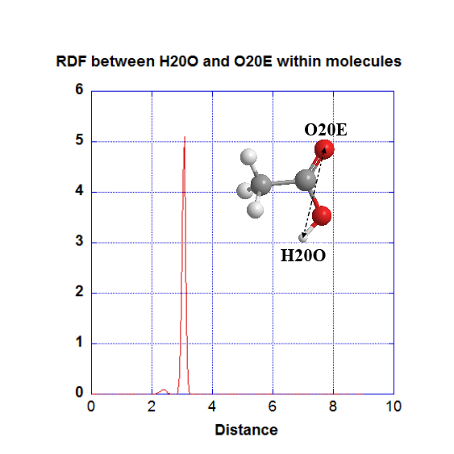
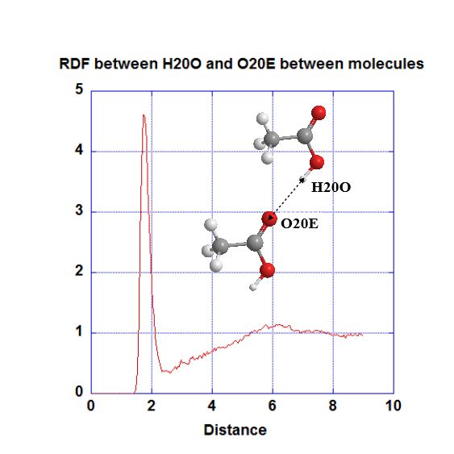

Analysis Criteria - Atom-based analysis criteria¶
For atom-based analysis, the analysis criteria can be further refined. This can be done in Option (4). By default, analysis can be carried out on all the designated atom range. However, if the system contained molecules, then you can choose how to analyse the results: either analyse the results based on atoms within the molecule, or analyse the results based on atoms between the molecules.
Let’s take the example of a system contained ethanoic acid molecules again. In the previous page, the RDF graph for atom-based analysis included all atoms, irrespective of whether they are within or between molecules.

Atom-based analysis (within molecule)
When this option is selected (value 2 in Option (4)), DL_ANALYSER will only determine the RDF for atom pairs located within (intra) a molecule. Not surprisingly, for H20O-O20E, this means only the atom pairs within carboxylic group of the molecules are counted:
{kind=link}
which results in a large peak, with the preferred orientation of the structure as shown.
Atom-based analysis (between molecules)
When this option is selected (value 3 in Option (4)), DL_ANALYSER will only determine the RDF for atom pairs with each atom located from different molecules (inter). The corresponding RDF graph for H20O-O20E is shown below.
{kind=link}
which is quite similar to the one shown in the previous page, but this time without the intra peak somewhere around 3 angstrom!